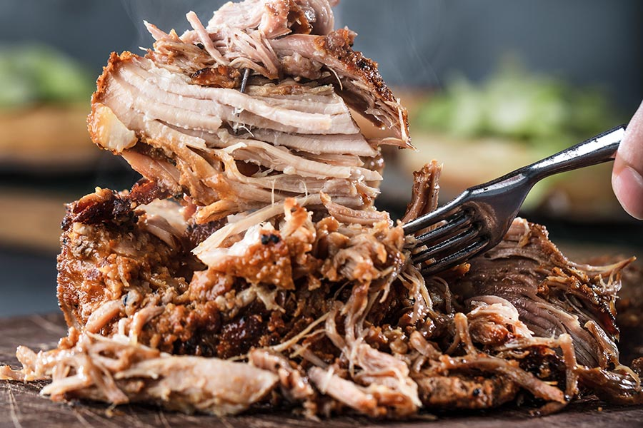

Pulled Pork

Description
Pulled pork is an easy, almost fool-proof (dont ask my wife who's a fool though) recipe that any novice smoker can master in no time!
Ingredients
- 8-12lb pork shoulder
- Rub of your choice (we love meat church's honey hog hot)
- Pan large enough to fit your meat
- spray bottle with apple juice or apple cider vinegar
- Ice cold beer
Steps
- Prehat your smoker to 225F
- Trim shoulder of any hard fat that wont render down in the cooking process
- Cover the shoulder in a generous amount of spice rub, this will help in creating that bark that will give us those caramalized crunchy bits in the end
- Place shoulder in pan onto the smoker and fire up your favourite Netflix show (and whatever else you got on you)
- Spritz the shoulder every 60-90 minutes with apple juice or ACV
- When shoulder reaches the magic IT of 165F wrap the pan and cover the shoulder with aluminum foil
- Once IT reaches 205F remove from smoker and place pan in a cooler covered in towels, or a preheated oven to 150F and allow to rest for 90 minutes
- remove foil, pour off excess juices into a cup and keep on the side.
- Carefully and perferably with gloves remove the shank, and begin to shred the pork, you can add more seasoning and re-add some juices if desired.